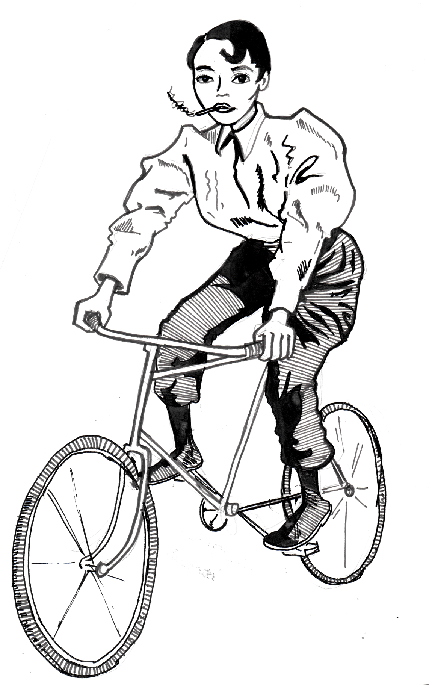
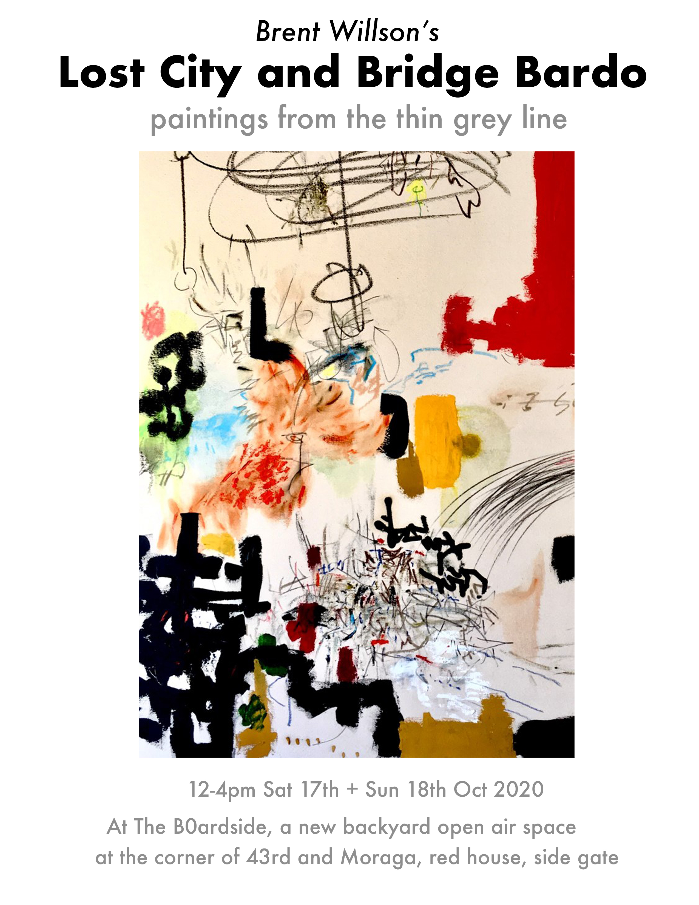
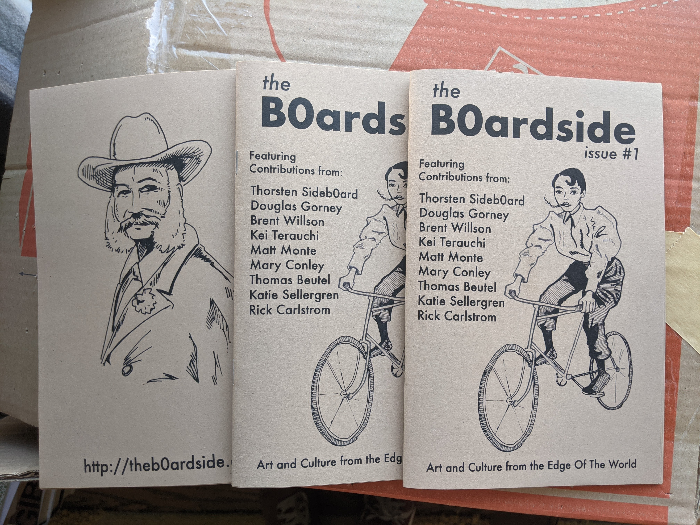

Let's Talk About The Sunset
Awesome wee vid of my neighborhood!
Awesome wee vid of my neighborhood!
Finally edited the video footage from our last art show, Brent Willson’s Lost City and Bridge Bardo!
The sky above the port was the color of …
Wed, September 9, 2020, San Francisco.
The sky above the Bay Area was filled with orange ash and smoke which came from the Bear Fire burning near Oroville, 150 miles northeast of San Francisco.
Music by TVO - “Sketch 3 - Hydroacoustics” from https://t-v-o.bandcamp.com/album/distant-lights-receding
Ah, super lovely review of My Side Of The City and The B0ardside #1 from my buddy Dan Shahin ..
This is taken from a longer livestream here.
thanks Dan!
Well then, well then!
Big changes afoot! This has been my personal blog for many years, just random videos I dig and the occasional content of my own. The name ‘B0ardside’ was one I originally thought of as the name of a venue I would one day own. Well! That time is now.
With Covid going on, I decided to experiment with my backyard more for open-air shows, putting on my first show in early september, which went well.
Since then, and chatting with friends, Douglas Gorney and Brent Willson, we’ve morphed the space into an art collective, with a zine and putting on more shows.
This weekend, we’re going to put on a two day show featuring Brent’s work. Zines will be available too. Come check it out!
 Here’s the full press release in the Sunset Beacon!